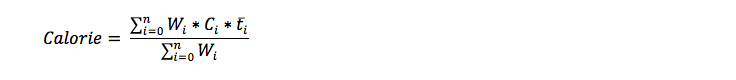

Why calorie
Step 1: Refine keyword
* presents for the keyword restricted by the rules.
Using past tense contributes the idiomaticity. As a result, the hashtag is not the best choice. ran miles, ran mins, and ran calories are good candidates. But miles can not be applied to other exercises, and calories appearsin the tweet at low frequency. The accuracy of ran mins improved by obeying the rules below:
The solution is the pattern matching. See details for P.M. in MySQL and PHP.
$sql = "SELECT tweet_text, created_at FROM tweets_new WHERE tweet_text LIKE '%".$Exe_type[$j]." % mins %' AND tweet_text NOT LIKE '%ran out%' AND tweet_text NOT LIKE '%".$Exe_type[$j]." %[,.]% mins %'";Step 2: Calculate calorie
The time extraction accuracy of original keywords is really low. Click to see the time extraction test file.
The time extraction with refined keywords applied rules above and threshold for different exercises has little error. Click to see the time extraction test file.
Equation:
n is the number of exercise types.
W is the fraction of the exercise among all types.
C is the calorie burned rate per hour of different exercises.
n is the average time of differnt exercises from tweets.
The threshold and the fraction of exercise are collected from U.S. Bureau of Labor Staistics offical website. And the calorie burned rate is collected from NUTRISTRATEGY offical website.
Step 3: Visualize calorie
Rutgers University, Software Engineering I, Group 2